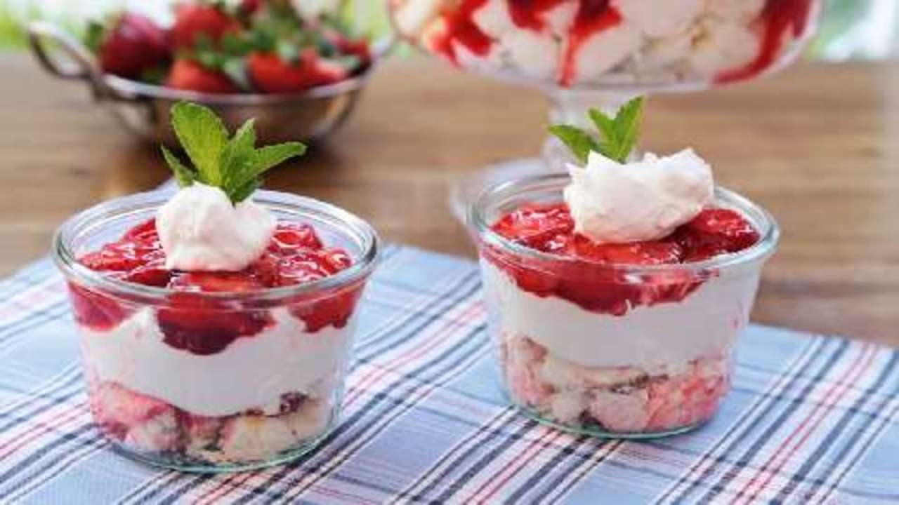

Home
Strawberry Angel Food Dessert

Description
Angel food pieces are topped with sweetened cream cheese, whipped topping and strawberries in glaze in this chilled, layered dessert. You can use a trifle dish and make multiple layers or, layer ingredients in individual serving cups. The recipe yields 18 servings. Nutritional quantity per serving: 261 calories; protein 3.2g; carbohydrates 36.3g; fat 11g; cholesterol 27.4mg; sodium 241.8mg.
Ingredients
- 1 (10 inch) angel food cake
- 2 (8 ounce) packages cream cheese, softened
- 1 cup white sugar
- 1 (8 ounce) container frozen whipped topping, thawed
- 1 quart fresh strawberries, sliced
- 1 (18 ounce) jar strawberry glaze
Steps
- Crumble or cut cake into bite-sized pieces. Place in a 9x13 inch dish.
- Beat the cream cheese and sugar in a medium bowl until light and fluffy then fold in whipped topping.
- Mash the cake down with your hands and spread the cream cheese mixture over the cake.
- In a bowl, combine strawberries and glaze until strawberries are evenly coated.
- Spread over cream cheese layer.
- Chill until serving.